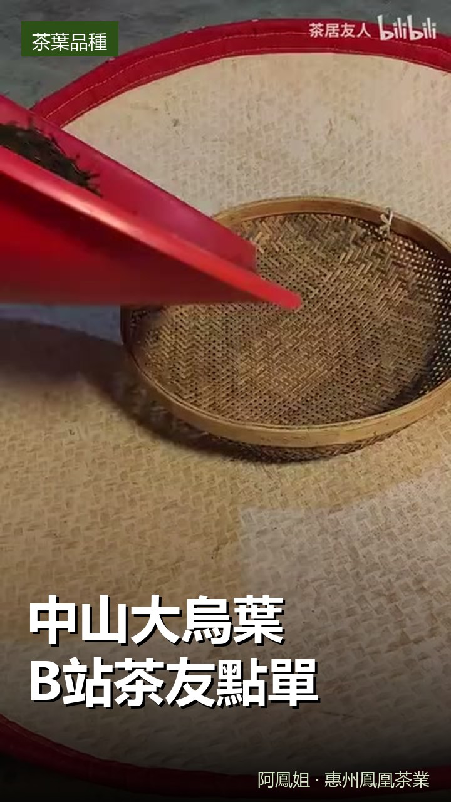
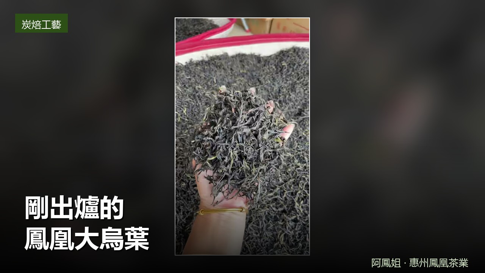

来听阿凤姐讲古 · 茶里品读潮汕故事
茶園・炭焙房・茶杯——本店實拍，不轉載、不用 AI 生成

專門給 B 站茶友安排的中山鳳凰大烏葉，實拍開箱與沖泡，口感醇厚、回甘持久。

炭焙房剛出爐的大烏葉，手工揀剔、條索緊結，開湯香氣高揚。中秋送禮與自飲都合適。
烏岽山採茶、荔枝木炭焙、開湯試茶、倉儲陳化——每週更新。想先看片，或者想先試茶，加微信傾。
電話 13435567385 ｜ 到店試茶請先預約